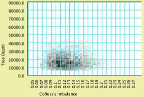

Mesquite's Charts
Charts compile and display values for a series of objects or items, whether taxa, trees, characters, or matrices. Mesquite has two primary styles of charts:- Bar & Line Charts - a bar or linechart summarizing values for each of many objects; includes histograms to show frequencies of values. (Called "Histogram" in earlier versions of Mesquite.)
- Scattergram - a plot showing each object's value in two variables
Most of Mesquite's charts are available through the first few submenus of the Analysis menu.
We suspect the greatest challenge to the user will be learning what chart to choose and how to set it up. For instance, how can one create a chart summarizing the estimated rate of a character's evolution according to each of a series of trees? Does one choose New Bar & Line Chart For>Characters because the value concerns a character? No, one chooses New Bar & Line Chart For>Trees because the numerous objects being summarized are trees, as the question concerns just one character but many trees. For each tree, what is being calculated is a value that relates to a character.
Contents
Chart Wizard
The first item in the Analysis window, Chart Wizard, helps you make charts. It asks you a series of questions to determine what type of chart you want. We provide this because it is sometimes difficult to decide how to start building a chart. Alternatively, you can use the New Bar & Line Chart for and New Scattergram for submenus to build a chart.Selection of objects in charts
Most bar & line charts and scattergrams depict the values of objects— characters, taxa, trees — that can be selected. If you select these objects elsewhere in Mesquite, for example by selecting a column (character) in the Character Matrix Editor, then this selected objects will be highlighted in the chart. You can select the objects directly in the chart by clicking and dragging with the arrow cursor.When objects are selected in the chart, and Copy is selected, then a list of the selected data points is copied to the clipboard. Otherwise if no objects are selected, then Copy puts the list of all data points into the clipboard.
Auto-recalculation
By default, charts are recalculated whenever Mesquite detects that the data or assumptions underlying the chart have changed. If the chart calculation takes a long time, then this can lead to many delays if you need to make many changes in the data or assumptions. You can temporarily turn off the automatic chart recalculation by deselecting the Auto-recalculate menu item in the Chart or Scattergram menu. You can also request to Force Recalculation in the Chart menu.Bar & Line Charts
The bar & line charts available via the Analysis menu are:- Characters — the items whose values are summarized are characters. These could be all of the characters of a matrix, or a series of simulated or randomized characters.
- Character Matrices — the items whose values are summarized are whole character matrices. These could be all of the matrices stored in a file, or a series of simulated or randomized matrices.
- Taxa — the items whose values are summarized are taxa within a taxa block.
- Tree blocks —the items whose values are summarized are blocks of multiple trees. That is, each item is a block of several trees. These could be all of the tree blocks stored in a file, or a series of simulated or randomized tree blocks.
- Trees — the items whose values are summarized are trees. These could be all of the trees within a tree block, or a series of simulated or randomized trees.
Tables as output
In addition to the graphical chart, you can obtain a text table representation of the chart in several ways:- Select Copy in the Edit menu of the chart to copy a list of point values to the clipboard; you can then copy it in to your favorite text or spreadsheet program
- Select Save Window as Text from the File menu to save a full text representation of the chart
- If Record Table to File in the Chart menu is selected, then a text file of the results will be saved each time a chart is recalculated. This is particularly useful for some calculations that result in more than just a single value per item charted; in this case you will be asked when you start the chart whether you want to save the record.
Examples
Robustness of estimated bias in character evolution — Suppose a biologist estimated the bias in the rates of gains versus losses in a character's evolution on a given tree. How might the estimate depend on accuracy of the tree's branch lengths? To answer this, one could see how the estimate varies when noise is added to the branch lengths of the given tree. First have a tree window available with the given tree showing. Then:- Select the menu item Analysis>New Bar & Line Chart For>Trees
- A dialog box with heading "Source of trees (Trees chart)" should appear. ChooseRandomly Modify Current Tree.
- In the dialog box "Random modifier of tree", choose Add Noise to branch lengths. You will then be asked to indicate the variance of the noise, and the number of trees to chart.
- In the dialog box "Value to calculate for trees" should appear. If you see "Forward/Backward Rates" as a choice under Tree Value using character, choose it. If you don't see Forward/Backward Rates, choose Tree Value using character, because the desired value depends on the tree and a character. and in the next dialog box "Value to calculate for tree with character", ask to show secondary choices then chooseForward/Backward rates
- In the dialog box "Source of characters (for Forward/Backward rates)", choose Stored Characters (presuming you already have your character of interest entered in a data matrix). If you have "Use Stored Characters/Matrices by Default" turned on in the Defaults submenu if the File menu, Mesquite won't ask you and will simply use Stored Characters.
- You may be asked other questions, depending on whether you data file includes multiple matrices. Then, a chart should appear to answer your query. (The calculation may take while.)
Compositional bias along a sequence — A biologist with DNA sequence data wants to see how the relative frequences of A, C, G and T vary along the length of the sequence. To see this:
- Select the menu item Analysis>New Bar & Line Chart For>Characters
- In the dialog asking for a source of characters, choose Stored Characters (assuming you have your DNA matrix in the file). If you have "Use Stored Characters/Matrices by Default" turned on in the Defaults submenu if the File menu, Mesquite won't ask you and will simply use Stored Characters.
- In the dialog "Value to calculate for characters (for Character Values Chart)", ask to show secondary choices then choose Character Compositional Bias
- The chart may initially appear uninteresting, but adjust as follows:
- Select Chart>Orientation>Values (Y) by Items (X) to cause the chart to show the characters lined up, in sequence, along the X axis.
- The chart will probably be set to automatically group into categories along the X axis. Try a moving window analysis by selecting Chart>Grouping on X>Moving Window..., and indicating the width of the moving window and the offset between adjacent window positions. The defaults are 5 and 1 respectively, but you could also try 10 and 2 to smooth further.

Calculation and Formatting options
The following menu items can be found in the Chart menu:- Orientation
- Number of Items (Y) by Values (X) — This is the typical "histogram" where the vertical axis shows how many items have the various values arrayed along the X axis. Thus, the X axis represents the value, the Y axis the number of items.
- Value (Y) by Items (X) — This displays the data with items arrayed in sequence along the X axis, and the Y axis representing the value for each item. This may be appropriate for items, like characters (sites in a DNA sequence), which have a natural ordering to them.
- Grouping on X — The X axis may be grouped into categories, such that the values falling within a range on the X axis are summarized in a single bar. This submenu controls any grouping.
- Automatic — Mesquite chooses automatically how to group on the X axis
- No grouping — The X axis is not grouped, and thus each item or object (each character, tree, etc.) is represented by a separate bar.
- Fixed number of groups — The X axis is divided into a specified number of groups.
- Fixed Group width — The X axis is divided into groups of a chosen width.
- Moving Window — The X axis is divided into overlapping groups of a chosen width. This serves to smooth the chart by averaging over adjacent values. There are two parameters to set: the width of the moving window, and its increment. The increment is the offset between the starting edge of adjacent moving window positions.
- Analysis — In this submenu could be various analytical tools. Two standard choices are Display Mean and Percentiles..., which display the mean value and tails of the distribution.
- Show Average For Group — When the chart is in the orientation Values by Items, and there is grouping along the X axis, then each bar may represent several objects (characters, etc.). This menu item allows you to choose whether the Y axis should show the sum of the values of those objects, or their average value.
- Show Individual Points in Text — When the chart has grouping along the X axis, then the text view of the window by default hows sums or averages of the groups. If instead you want the text view to give all of the values for the original objects shown by the chart, then select this menu item.
- Show as Bar Chart — By default, the chart is shown as a bar chart. However, if this option is turned off, the chart will be shown as a series of dots connected by a thin line.
- Cumulative Mode — By default, the chart is not shown in Cumulative mode. However, by choosing items in the Cumulative submenu of the chart, Mesquite will present the cumulative values at each point:
- Off — Not cumulative
- Simple Cumulative — The value of each item is the sum of the values of all previous items
- Average Cumulative — The value of each item is the average of the values of all previous items
- Reverse Simple Cumulative — The value of each item is the sum of the values of all following items
- Reverse Average Cumulative — The value of each item is the average of the values of all following items
Scattergrams
The scattergrams available in the Analysis menu are:- Characters — each point in the plot represents a character. These could be all of the characters of a matrix, or a series of simulated or randomized characters.
- Taxa — each point in the plot represents a taxon within a taxa block.
- Trees — each point in the plot represents a tree. These could be all of the trees within a tree block, or a series of simulated or randomized trees.
- Nodes (Available under New Chart for Tree when a tree window is foremost) — each point in the plot represents a node in the tree of the tree window.
Examples
Canonical Variates Analysis — For a sample of specimens measured for a series of variables, how can the measurements be combined to best distinguish predefined groups? Multivariate analyses such as these can be done using modules in the Rhetenor package. Each specimen will be treated as a taxon. A continuous data matrix of the measurements should first be entered, and the taxa be assigned to groups. Next:- Select Analysis>New Scattergram For>Taxa
- In response to the query about same or different calculations, chose Same
- If asked, indicate you want to value for taxa to be Continuous States of Taxon. Otherwise, in response to the dialog box "Source of characters (for Continuous States of Taxon)", ask to show secondary choices and choose "Characters from Ordinations".
- In the dialog box "Source of matrices to be ordinated", select Stored Matrices. (If you have "Use Stored Characters/Matrices by Default" turned on in the Defaults submenu of the File menu, Mesquite may not ask and will simply use Stored Matrices.)
- In the dialog box "Ordination (for Characer Source)", select Canonical Variates Analysis. (You may need to ask for secondary choices)
- Select Analysis>New Scattergram For>Characters
- In the dialog box "Source of characters (For Characters scattergram)" choose Stored Characters.
- In response to the query about same or different calculations, chose Different
- On the X axis we will put hydrophobicity. Thus, in the dialog box "Values for X axis", ask for secondary choices and choose Protein Site Property.
- In the dialog box "Property of Amino Acid" choose Kyte & Doolittle Hydrophobicity.
- In the dialog box "Values for Y axis", choose Parsimony Character Steps if you see it. (Whether or not you see it depends on the setting "Show Subchoices in Module Dialogs" in the Defaults menu of the File menu.) If you don't see it, choose Character Value with Current Tree, then in the dialog box "Value to calculate for character" chose Parsimony Character Steps. If Mesquite asks, indicate you want Current Parsimony Models to be used in the parsimony calculations.
The following scattergram shows the results of such an analysis, with two additions. First, the dots are colored by a third variable, the mean molecular weight of amino acids at that site. This can be done by selecting Color by Third Value from the Color menu, and in the dialog box "Values by which to color spots in the scattergram" asking for secondary choices.

Calculating and formatting options
The following menu items can be found in the Scattergram menu:- Marker Size — allows you to choose the size of the dots of the scatterplot
- Analysis — In this submenu could be various analytical tools. For instance, if PDAP is installed, you can request regression and correlation analysis underScattergram>Analysis>.
- Special Effects
- Show Density — this shades the background of the chart according to the density of points. To see this, you may want to turn off "Show dots" (see below). Here is an example:

- Join the Dots, Join Last to First, Thick Joints — These control whether and how a line is drawn between dots of the scattergram. These options are used to indicate molecular structure as in the cytochrome B example in Mesquite_Folder/examples/Molecular/06-cytochromeB.nex
- Show dots — determines whether or not the dots representing objects in the scatterplot are drawn individually